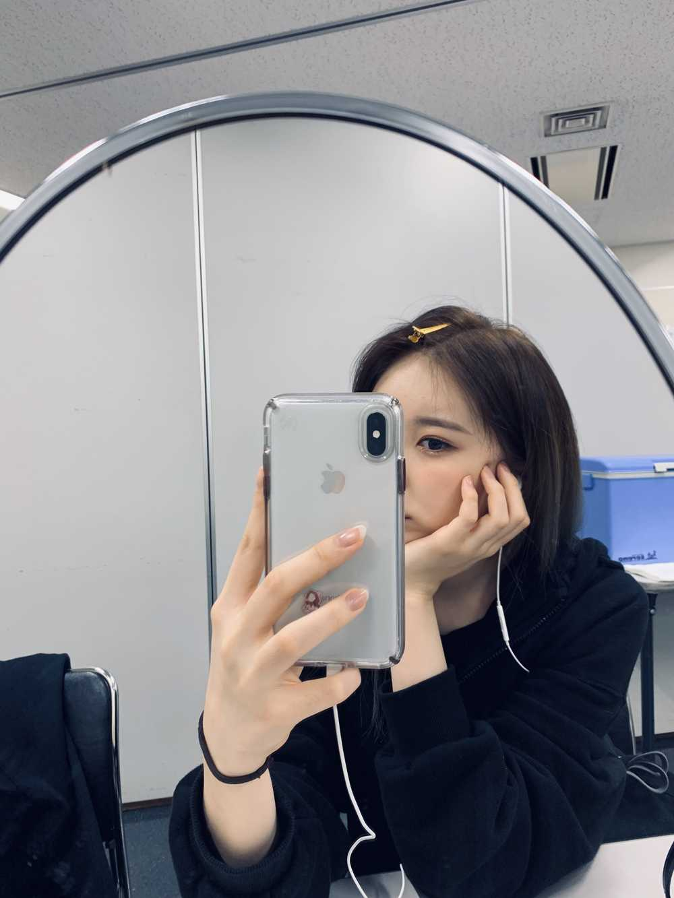

긴장 반 설렘 반 콘서트 준비중!!
준비하면서
낫또도 먹어보고ㅋㅋㅋㅋㅋㅋㅋㅋㅋㅋ
한의원쌤..께서 낫또 진짜 좋다고 기회가 되면 먹어라!!
잘 못 먹겠으면 선생님 드시는 방법대로
김치 쫑쫑쫑 썰어 넣고 김가루 솔솔 뿌려서 섞어서 먹으면 괜찮다고 하셨는데????
어머
아이스박스에 낫또랑 날계란 있는 거예요!!
나코랑 히토미는 낫또에 날계란 그리고 식초 조금 넣어서
먹는 거 보고
나는 날계란에 김치를 추가해서 먹어봤는데
괜찮은 거예요 ! 김가루 있었으면 진짜 하나 다 먹었을 텐데~~~
김치를 넣으니까 뭔가 빨간 낫또...가 되었지만 ?
먹었어요요휴
휴바쁘다 바빠
이호안뇽!!❤️❤️❤️